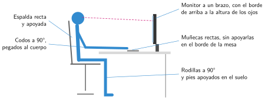

El puesto de trabajo y la postura
Criterios: 1a, 1b, 1d
🤔 Pienso10 min
Qué hago aquí: Piensa un momento y contesta con lo que ya sabes. No pasa nada si no lo sabes: es para empezar.
Siéntate como lo haces siempre delante del ordenador. Pide a un compañero que te haga una foto de lado. ¿Qué cambiarías?
📖 Leo y aprendo30 min
Qué hago aquí: Lee despacio, mira los dibujos y los ejemplos, y quédate con la idea clave del final.
La ergonomía adapta el puesto de trabajo a la persona. Una mala postura durante muchas horas causa dolor de espalda, de cuello, de muñecas y cansancio de la vista.

Para poner en marcha el equipo: encender la torre y el monitor, iniciar sesión con tu usuario y contraseña, abrir solo los programas que necesitas. Al levantarte, bloquear (
+

). Al terminar, guardar, cerrar los programas y apagar desde Inicio, nunca con el botón.
El teclado extendido tiene cinco zonas: el bloque alfanumérico (letras, números y signos), las teclas de función (F1 a F12), las teclas de control (

,

,

,

…), el bloque de desplazamiento (flechas,
,
,

) y el teclado numérico.
✏️ Hago150 min
Qué hago aquí: Haz las actividades en orden. Empieza siempre por las básicas.
Ajusta tu silla y tu monitor según el dibujo. Escribe tres cosas que has cambiado.
Señala en tu teclado las cinco zonas. ¿Qué hacen

,
,
y
?
Escribe en orden los pasos para empezar y terminar una jornada con el ordenador: encender, iniciar sesión, bloquear, guardar, apagar.
Haz con un compañero una lista de comprobación del puesto de trabajo (diez puntos) y revisad juntos tres puestos del aula.
Entra en el programa de mecanografía con tu usuario y haz la prueba inicial de nivel. Apunta tu velocidad y tus errores en la tabla de progreso.
🚀 Amplío (si quieres saber más)
Qué hago aquí: ¿Has terminado? Lee la curiosidad o elige el reto. Es voluntario.
Investiga qué es un teclado ergonómico y un ratón vertical. ¿A quién se los recomendarías?
✅ Compruebo10 min
Qué hago aquí: Contesta sin mirar la ficha y marca cómo lo llevas.